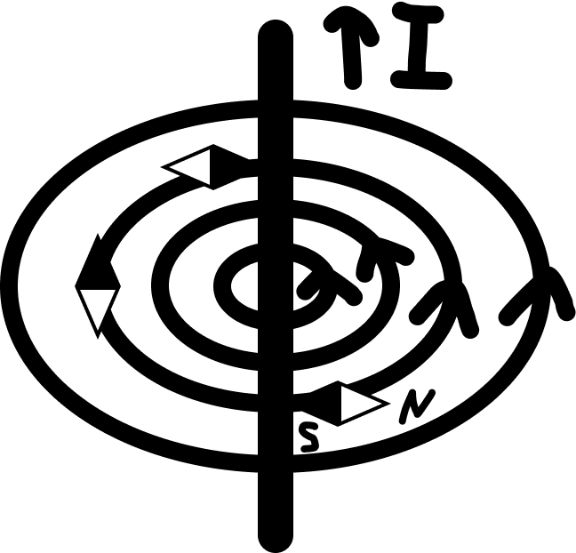

Электромагнитизм
Магнитное поле электрического тока
Магнитное поле – это особый вид материи, связанный с движущимися зарядами и действующий на движущиеся заряды.
Индукция магнитного поля \(\vec{B}\) [Тл] – векторная физическая величина, показывающая направление и действие магнитного поля на движущиеся заряды (направлена по касательной к магнитным линиям).
Направление магнитного поля тока:
1. Для прямого тока:
× – от нас; • - на нас
2. Для кругового тока:
Выводы:
- Магнитные линии перпендикулярны току;
- Магнитные линии замкнуты;
- Линии выходят с N и заходят в S.
Правило Буравчика (правая рука):
- Для прямого тока: большой палец по току, 4 пальца по магнитным линиям.
- Для кругового тока: большой палец по магнитным линиям, 4 пальца по току.
Сила Ампера, сила Лоренца
Сила Ампера:
\( F_а \) [Н] – это сила, с которой внешнее магнитное поле действует на проводник с током.
\( F_а = I \cdot B \cdot l \cdot \sin(\alpha) \)
I [А] – сила тока;
B [Тл] – индукция внешнего магнитного поля;
𝑙 [м] – длина проводника;
∠α - угол между направлением тока и магнитным полем.
Правило левой руки (направление силы Ампера):
- 4 пальца по току;
- \(\vec{B}\) в ладонь;
- Сила Ампера по большому пальцу.
Сила Лоренца:
\( F_л \) [Н] – это сила, с которой внешнее магнитное поле действует на движущуюся заряженную частицу.
\( F_л = q \cdot v \cdot B \cdot \sin(\alpha) \)
q [Кл] – электрический заряд;
\(v\) [\(\mathrm{м/с}\)] – скорость заряда;
B [Тл] – индукция внешнего магнитного поля;
∠α - это угол между направлением скорости и направлениемвнешнего магнитного поля.
| Направление силы Лоренца | |
| Положительный заряд: | Отрицательный заряд: |
| (левая рука) | (правая рука) |
| Скорость - по 4 пальцам | Скорость - по 4 пальцам |
| B - в ладонь | B - в ладонь |
| \( F_л \) - по большому пальцу | \( F_л \) - по большому пальцу |